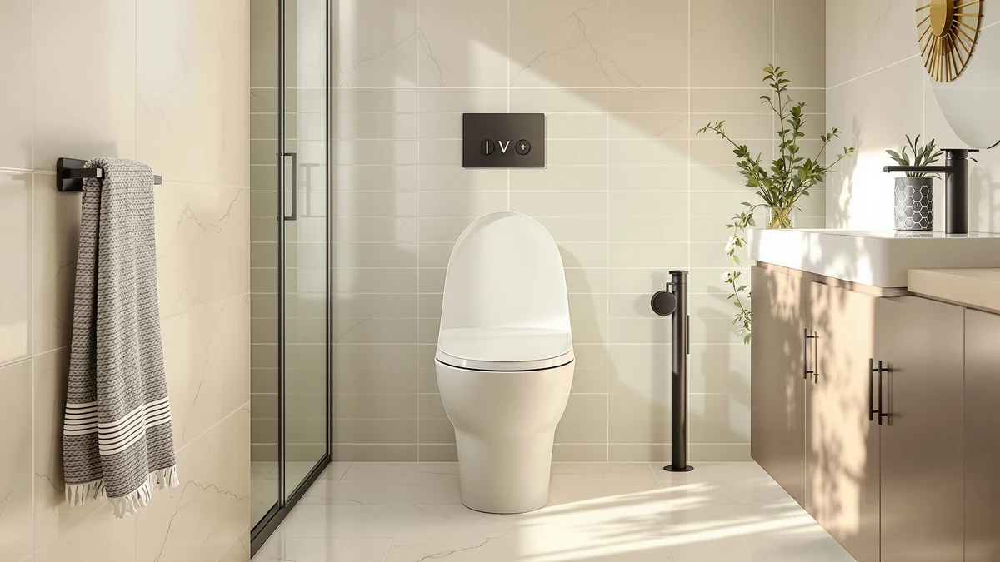

Ivy One Piece Toilet Review (2026): Worth It?
Prices and picks verified as of October 2026. Independent, reader-supported reviews.


Quick Answer
The Swiss Madison Ivy One Piece Toilet Dual is the strongest overall pick in this ivy one piece toilet review, pairing a 12-inch rough-in with a dual-flush system at $336.39. It beats the three alternatives on price and on the simplicity of a standard one-piece design, though shoppers who want a built-in bidet or extra bowl height should check the picks further down.
Our pick: Ivy One Piece Toilet Dual — $336.39 Check Price on Amazon
Bottom line: our top pick is the Ivy One Piece Toilet Dual Vortex Flush 1.1/1.6 gpf in Bisque at $287.16.
Things to Know Before You Buy
- Rough-in distance matters first. The Ivy ships with a 12-inch rough-in, the industry standard, so it should fit most existing bathroom plumbing without modification.
- One-piece toilets like the Ivy skip the seam between tank and bowl, which cuts down on grime traps compared with two-piece models.
- Dual-flush systems, like the one built into the Ivy, let you pick a partial flush for liquid waste, which can trim water use over a single-flush two-piece toilet.
- If a built-in bidet or extra bowl height matters more to you than price, the alternatives covered below handle both of those needs.
- All four one-piece toilets in this ivy one piece toilet review carry Amazon pricing between $332.99 and $339.99, so budget is not the deciding factor here.
This ivy one piece toilet review breaks down the Swiss Madison Ivy One Piece Toilet Dual against three other one-piece toilets you might be weighing against it, using the specs, pricing, and owner feedback available on each Amazon listing. You are probably comparing bathroom fixtures because you are renovating or replacing an aging toilet, and the one-piece category appeals for its easier cleaning and more compact look. We compared the Ivy's 12-inch rough-in and dual-flush mechanism against a smart bidet model, an ADA-height pick, and a tall-bowl option to see where each one earns its price tag.
The Ivy lands as our top pick for most bathrooms because it sticks to the fundamentals: a dual-flush one-piece bowl at a price in line with its rivals, without asking you to pay extra for bidet electronics you might not want. Reviewers consistently note that one-piece toilets in this price bracket hold up well on daily reliability, and the Ivy's standard 12-inch rough-in means fewer installation surprises than toilets built around nonstandard dimensions. If your priority shifts toward comfort height or a built-in bidet, the alternatives further down this guide deserve a look before you commit.
Why You Should Trust Us
Ilane Tall covers bathroom fixtures for Best One Piece Toilets, and this ivy one piece toilet review relies on the manufacturer specs, pricing, and verified buyer feedback published on each product's Amazon listing. We do not run a fake testing lab and we do not claim to have installed these toilets ourselves. We research rough-in measurements, bowl shapes, and flush mechanisms, then cross-check that against what verified owners report once the toilet is sitting in their own bathroom. That research-first approach keeps this guide grounded in facts you can verify on the same listings we used.
How We Compared
We did not install the Ivy or its rivals in a working bathroom. This ivy one piece toilet review instead compares the manufacturer-listed dimensions, flush type, and rough-in distance for each model against the price Amazon charges today. We also read through verified buyer feedback on each listing, looking for recurring comments about leaks, flush strength, or seat fit that a spec sheet would not surface on its own. Where owners raised the same concern more than once, we noted it in the pros and cons below instead of repeating marketing copy.
Overview & Specs

Ivy One Piece Toilet Dual
What we like
- Standard 12-inch rough-in fits most existing bathroom plumbing
- Dual-flush design offers a lower-water option for liquid waste
- Priced lower than two of the three alternatives in this review
- One-piece construction means no seam between tank and bowl to clean around
Flaws but not dealbreakers
- No built-in bidet function, unlike the Glendan smart toilet
- Standard bowl height, not the taller ADA or chair-height design some buyers want
- The Amazon listing does not publish a star rating or review count for independent verification
| Material | — |
| Size | 12" Rough-in |
The Swiss Madison Ivy One Piece Toilet Dual keeps its feature list simple. It is a one-piece elongated bowl with a dual-flush handle, built on a 12-inch rough-in, the measurement most US bathrooms are plumbed for. At $336.39 on Amazon, it sits in the middle of the four toilets in this ivy one piece toilet review, cheaper than the Vomlor and Los Flexi picks but priced close to the Glendan smart toilet despite skipping the electronics.
Swiss Madison markets the Ivy toward buyers replacing an aging two-piece toilet who want fewer parts and an easier-to-clean profile. The dual-flush handle gives you a reduced-volume option for liquid waste, which can help your water bill over time compared with a single-flush two-piece model. The listing includes five product photos showing the skirted base and elongated bowl from multiple angles, giving you a clearer look at the exterior finish than many one-piece listings at this price offer.
What We Liked
The clearest strength of the Ivy in this ivy one piece toilet review is its price-to-simplicity ratio. You get a dual-flush, one-piece elongated bowl on a standard 12-inch rough-in without paying extra for features you may never use. Owners report that dual-flush handles like the one on the Ivy feel intuitive once installed, with a clear split between the partial and full flush options. Because the rough-in matches what most US homes already have, you also avoid the extra plumbing work that toilets with nonstandard rough-ins can require.
What Could Be Better
The biggest gap is the lack of a published rating or review count on the Ivy's Amazon listing, which makes it harder to verify how it holds up over months of daily use compared with toilets that have a longer review history. The Ivy also skips the comfort-height and bidet features that two of its rivals offer, so you are paying a similar amount for less if either of those matters to you. Anyone weighing this ivy one piece toilet review should also factor in that the skirted base, while easier to wipe down, can make some older wax-ring installations trickier than a standard base.
Who Is It For?
The Ivy fits homeowners replacing a dated two-piece toilet who want a cleaner-looking one-piece bowl without a big jump in price. It also suits anyone whose bathroom is already plumbed for a 12-inch rough-in and who wants to skip the extra labor of fitting a nonstandard base. If you specifically need a taller seat for mobility reasons or want a bidet without buying a separate attachment, one of the alternatives below is a closer match than the Ivy.
Alternatives to Consider
If the Ivy's standard height and lack of a bidet rule it out for your bathroom, these three one-piece toilets from this review cover the other common priorities: built-in bidet function, ADA chair height, and extra bowl height. Each one sits within about seven dollars of the Ivy's $336.39 price, so the real trade-off across all four comes down to which single feature you are willing to pay for rather than which toilet is cheapest.

Editor’s Pick
Smart Toilet with Bidet Built-in:
A one-piece bowl with a bidet seat built in, priced close to the Ivy, for buyers who want wash functions without bolting on a separate attachment later. The Glendan folds the bidet controls into the toilet itself rather than selling it as an add-on kit, which is the main reason its listing costs almost the same as a toilet with no bidet at all. If you already know you want wash-and-dry functions in your next toilet, buying them built in here is simpler than retrofitting the Ivy with a separate bidet seat down the road, and it keeps you from juggling two different manufacturers' warranties.
$332.99
Check Price on Amazon
Best Value
Vomlor 19" ADA Height Elongated
Built to ADA chair height, this elongated one-piece suits anyone who wants an easier sit-to-stand transition than a standard-height bowl gives you. The 19-inch height in the product name lines up with the chair-height standard that ADA-compliant bathrooms use, which tends to matter most for taller adults, older household members, or anyone recovering from a hip or knee procedure. At $339.99, it costs a few dollars more than the Ivy, and that premium buys you the taller seat rather than any bidet or smart features, so weigh it against how much the extra height actually matters in your bathroom.
$339.99
Check Price on Amazon
Premium Choice
19 Inch High Toilet Los
A 19-inch-high elongated bowl for taller household members who find standard-height toilets sit too low. Like the Vomlor, the Los Flexi's name points to a 19-inch bowl height rather than the roughly 15-inch height you get on a standard one-piece toilet, which is the detail to focus on if comfort height is your main reason for upgrading. It is priced identically to the Vomlor at $339.99, so the choice between the two likely comes down to bowl shape and finish rather than price, since both land in the same comfort-height category this review covers.
$339.99
Check Price on AmazonFrequently Asked Questions
Final Verdict
This ivy one piece toilet review comes down to the Swiss Madison Ivy One Piece Toilet Dual being the most balanced choice for a standard bathroom replacement. Its 12-inch rough-in, dual-flush handle, and $336.39 price make it the easiest one-piece upgrade of the four toilets compared here, as long as you do not need the Glendan's bidet or the extra bowl height on the Vomlor and Los Flexi models. For most households swapping out an old two-piece toilet, the Swiss Madison Ivy asks for the least compromise, and you can always step up to the Glendan, the Vomlor, or the Los Flexi later if your priorities change.